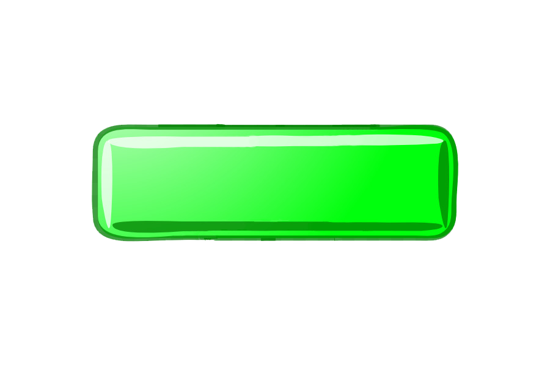

Bienvenido a MAGET...
"La utilización de las nuevas tecnologías nos permitirán las dispersión eficaz de los saberes".
"La utilización de las nuevas tecnologías nos permitirán las dispersión eficaz de los saberes".
Es calcular los sumandos uno debajo del otro de manera que coincidan las unidades de la suma en cada columna por separado empezando por las unidades, el resultado de cada suma se escribe debajo de cada columna y de la linea de resultado.

Es la operación que consiste en sacar, quitar, reducir, o separar algo de un todo, corresponde a una de las operaciones básicas de la matematica.
Consiste en hallar el producto de sumar un mismo numero tantas veces indique el otro numero, el primer paso de la multiplicacion de dos cifras es es lo mismo que hacer una multiplicacio}ón de una cifra, multiplicamos las unidades del multiplicador por las cifras del multiplicando y el resultado de esta operacion se xoloca en la parte de abajo de la linea separadora.
Consiste en repartir en numeros iguales del tamaño que indique el divisor por ejemplo:
20/5=4
Lo que realizaremos para resolver esta operacion será repartir en 5 partes el numero 20 y este resultado será 4
Son figuras geometricas con una determinadfa cantidad de vetices que al unirlas con una linea se genera una figura con cierta contidad de caras, dependiendo de su cantidad de caras se clasifican así:
Estos son los poligonos mas utilizados pero su cantidad de lados puede llegar a ser muy grandes
El perimetro es la suma de todos los lados que conforman una figura geometrica plana, es decir, el perimetro es lo que mide del contorno de una figura.
El perimetro se calcula teniendo en cuenta dos variables:
* El numero de lados de una figura.
* La longitud de cada uno de cada uno de esos lados
En el caso de que se trate de una circunferencia, tomamos en cuenta la longitur del radio de dicha circunferencia para lograr calcular su perimetro.